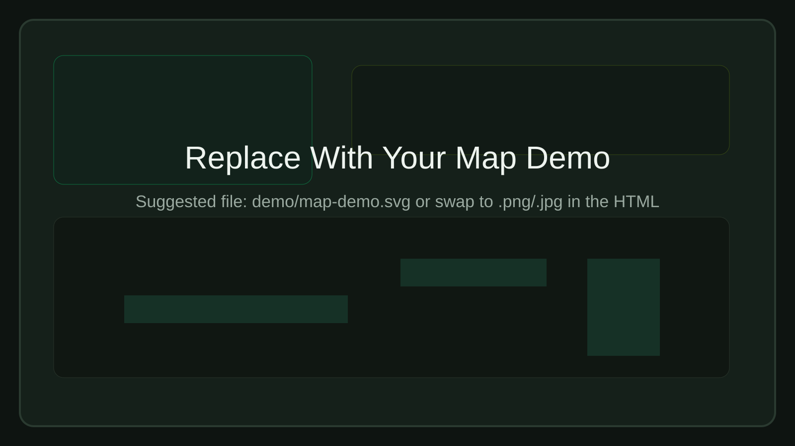
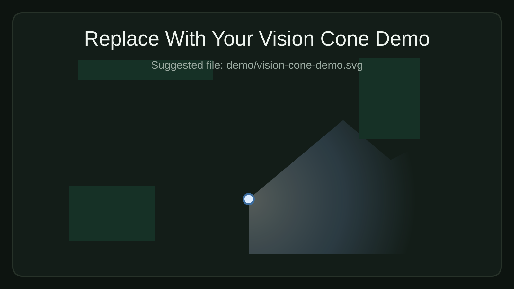
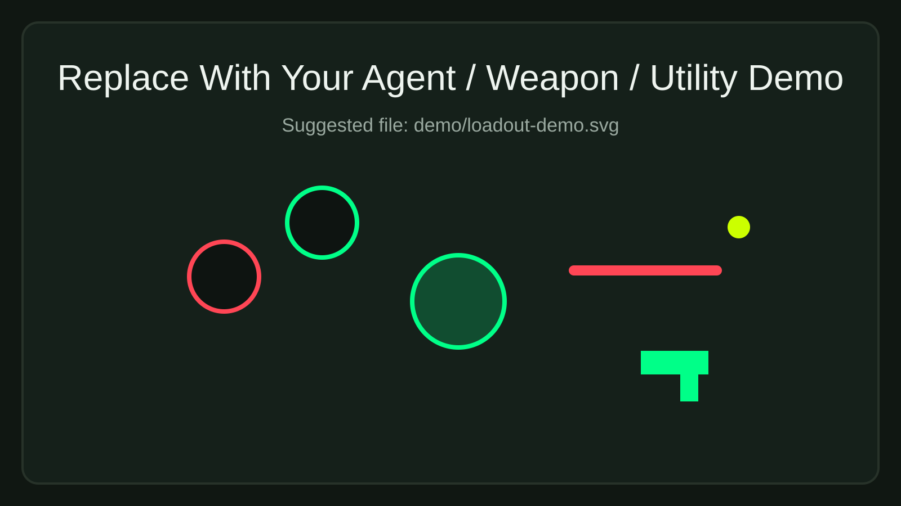

The Simulation
The backend resolves combat with a tick-based model. Weapon type, position, side, and utility state all shape combat power.
Tactical Strategy Sandbox
FPS Strat Simulator is a 2D planning workspace for tactical shooter rounds. It combines map control, placement tools, vision modeling, and combat simulation in one surface.
The backend resolves combat with a tick-based model. Weapon type, position, side, and utility state all shape combat power.
Multiple maps can be swapped from the dropdown. Each switch resets placed objects, drawings, and vision state.
Agents drop onto the board with weapons, sides, and utilities to model setups, site hits, and spacing.
Pen, eraser, text, spike, ping, and vision tools turn the map into a live planning canvas.
Demo Surfaces
The page has three visual slots. Replace the files in `demo/` while keeping the same names.
Map Showcase
Use this area for a full map screenshot with the board and planning layout.
demo/map-demo.svg

Vision Cone
Use a screenshot that shows cone direction, occlusion, and polygon response.
demo/vision-cone-demo.svg

Agents + Weapons + Utilities
Use this slot for agents on the board with weapons, utilities, and planning tools.
demo/loadout-demo.svg
